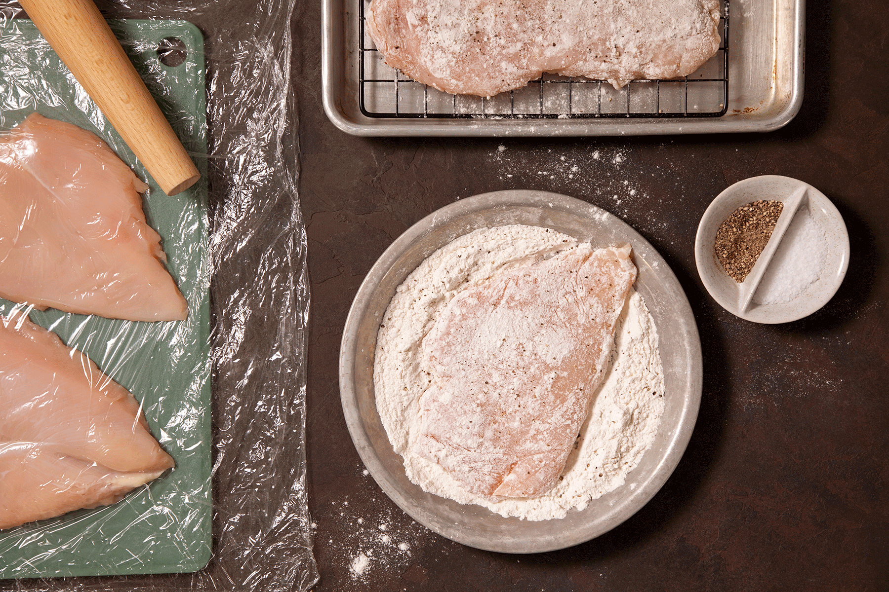
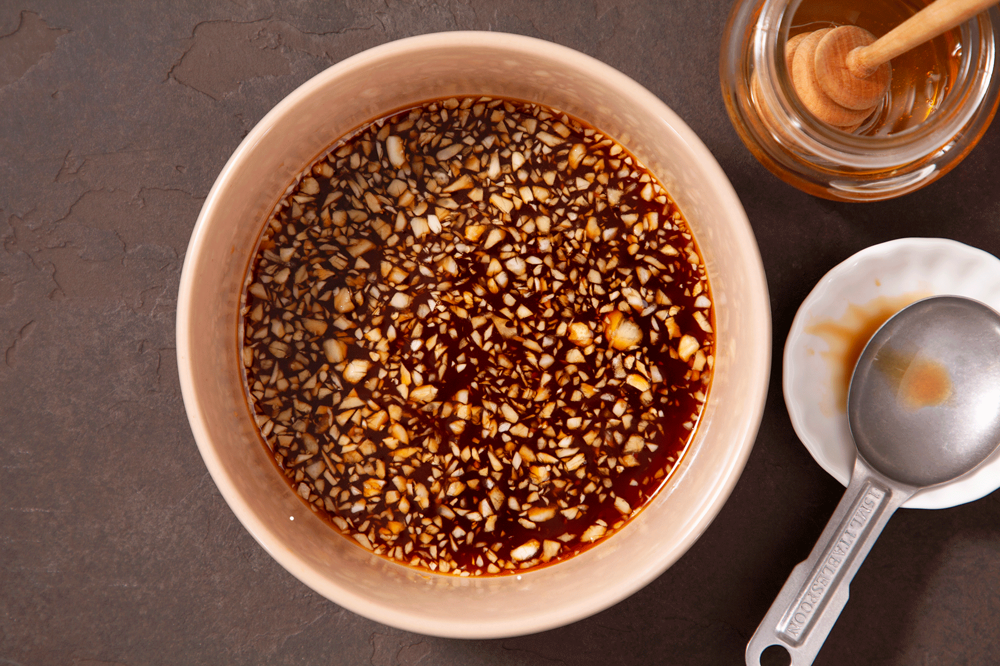
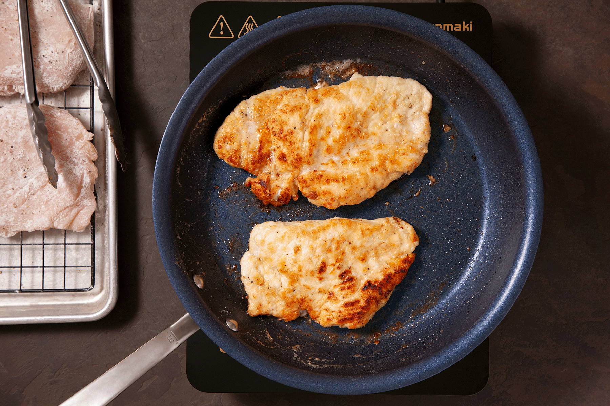
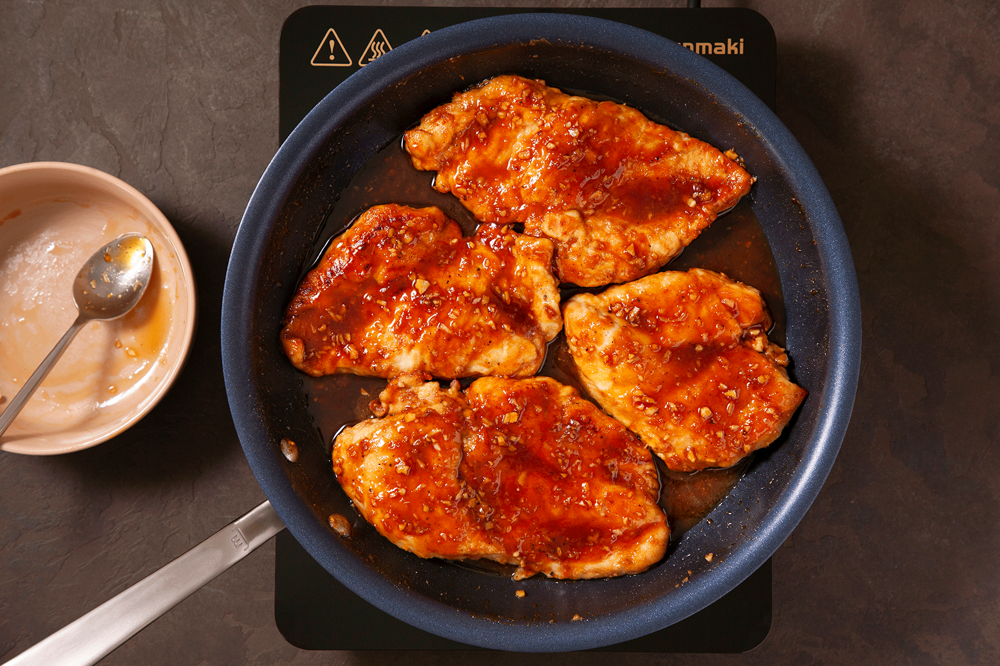
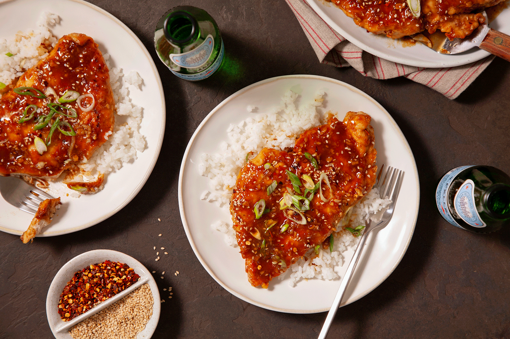

Ingredients
- 4 boneless skinless chicken breast halves (6 ounces each)
- 1/2 cup all-purpose flour
- 1/4 teaspoon salt
- 1/4 teaspoon pepper
- 4 tablespoons butter
- 1/3 cup honey
- 3 tablespoons soy sauce
- 2 tablespoons rice vinegar
- 1 tablespoon minced garlic
What is Honey Garlic chicken?
Honey garlic chicken is exactly what you want to make when you’ve grown tired of boring, plain chicken. This recipe turns regular chicken breasts into a saucy, piquant dish using only the simplest ingredients. You get the sweetness from the honey and the minced garlic gives a nutty aftertaste.
The beauty of honey garlic chicken is that with minimal preparation, the result is an entree that looks like it came out of a restaurant kitchen.
The tender chicken is so lightly breaded—just enough to give it some bite—and then glazed with a deliciously sticky, sweet and garlicky sauce. Soy sauce and honey combine to form a deep umami flavor, with just a bit of acid from the rice vinegar.
Perfect over a bed of rice or with quinoa and roasted vegetables, this dish will become a weekday staple.
Method
- Step 1: Mix your dry ingredients
Start with a large, shallow dish at least the size of a dinner plate.
To the bowl, add the flour, salt and pepper and then use a fork or whisk to blend it together.
- Step 2: Prepare the chicken
ay a piece of plastic wrap or parchment on a cutting board. Place each breast on the board in an even layer, and then top with another sheet of plastic wrap.
Using a mallet, gently pound the chicken, starting from the middle and working your way to the outside.
Continue until the breast is 1/2-inch thick.
- Step 3: Flour the chicken
Gently lay the chicken breasts in the flour mixture. Use your fingers to gently pat the chicken to allow the flour to adhere better.
Now flip the breasts over and repeat so that flour coats both sides. Lightly shake them to remove excess flour.

- Step 4: Mix liquid ingredients
In a small bowl, combine the honey, soy sauce, rice vinegar and garlic. Mix well with a fork or whisk.

- Step 5: Sear the chicken
In a large skillet, melt the butter over medium heat. Once the butter starts to bubble and smells slightly nutty, add the chicken (you may need to do this in two batches depending on the size of your skillet).
Cook the chicken until the skin turns brown, which you can check with a pair of tongs by just pulling up a corner of the chicken to check. Once it has browned, flip the chicken over and allow the second side to brown.

- Step 6: Add the sauce and simmer
Reduce the heat to medium low, and pour the sauce over the chicken, making sure to scrape all of it out of the bowl.
Flip the chicken over, so the sauced side is now on the bottom, and then leave the chicken to simmer, uncovered, until no longer pink. This should take six to 10 minutes.
Keep checking the chicken so it doesn’t overcook, and don’t allow the sauce to go over a simmer.
Serve immediately.

Serve Immediately & Enjoy!

Honey Garlic Chicken Recipe Variations
- Make it a stir-fry: Honey chicken stir-fry takes the recipe above and adds vegetables to it, resulting in a delicious one-bowl meal.
- Swap the meat: If you want to mix things up, change out the chicken for pork and try honey garlic ribs.
- Use the sauce to dress a salad or slaw: Use any leftover sauce in a salad or slaw you pair with the chicken. The flavors will blend well with crisp leafy greens.
Honey Garlic Chicken Tips
How do I prevent the chicken from being dry or overcooked?
Flattening the chicken to an even thickness will ensure even cooking without it getting tough or dry. The sauce infuses the meat with moisture.
The key is to keep the skillet at medium heat, not high, and to ensure that as soon as the meat is no longer pink, you pull it off the stove.
Can I use thighs to make honey garlic chicken?
While you can use skinless, boneless thighs to make this recipe, the texture of the finished product will be slightly different (but still delicious). Dark meat is often more moist than white meat, but takes slightly longer to cook.
Still, it should only take a minute or two longer, so keep an eye on the progress of the dish as it simmers.
What sides work well with honey garlic chicken?
Consider grains like rice, quinoa or couscous. Fluffy grains will soak up all the sauce and turn this dish into a warm, comforting meal. The addition of roasted vegetables will take this from a simple dish to a colorful, complete meal. Steamed or roasted broccoli
or sauteed carrots or asparagus will all go magnificently with this chicken bowl. For a healthier version, consider spaghetti squash for a slightly sweet, earthy bite that will pair well with your honey garlic sauce.